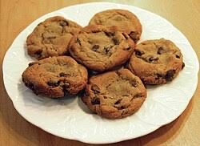

These are cookies. Behold them in all their glory.

However, there seems to be a problem...
Why must we call them cookies, if one does not cook them? This problem spans across other words in the English language as well. You park in a driveway but drive in a park way. Many words exist as oxymorons such as bittersweet, or the word oxymoron itself.
Maybe if we bond together, we can make the world a better place by calling cookies "bakies".